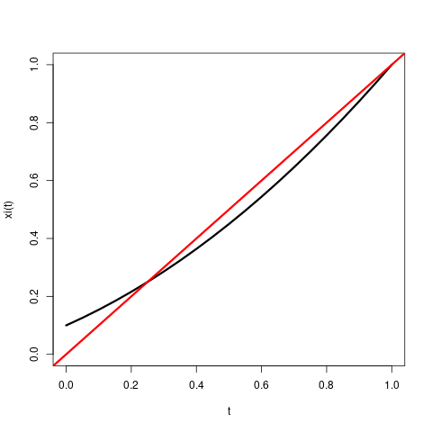
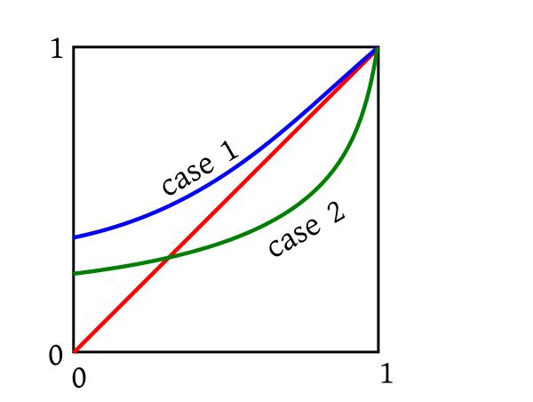
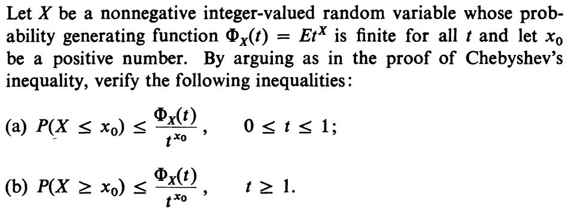

EXERCISE 2: Think of a case where the radius of convergence is $\infty$.
EXERCISE 3: Think of a case where the radius of convergence is $1$.
Proof:Standard theorem from real analysis.[QED]
Thanks to this theorem,
we can recover the probabilities from the PGF by repeated differentiation at $t=0$:
$$p_n = \frac{p^{(n)}(0)}{n!}$$.
Hence we get the following theorem.
EXERCISE 4: Show that for $n\in{\mathbb N}$ we have
$$E(X(X-1)\cdots (X-n+1)) = p^{(n)}(1)$$.
EXERCISE 5: Show that $E(t^X) = p(t)$.
EXERCISE 6: Show that if $X,Y$ are independent random variables taking nonnegative integer values,
with PGFs $\xi(t)$ and $\psi(t)$, then the PGF of $X+Y$ is
$\xi(t)\psi(t)$.
Imagine a cell that will split into two cells after exactly one minute. Then, after one more minute, each of these two cells
will again split into two. If it goes on like this, then we shall have$2^n$ cells in the $n$-th generation. Clearly
understand how the generations are numbered. The initial cell belonged to generation 0. We shall
call the number of cells in the $n$-th generation $X_n$. Thus, $X_n = 2^n$. Also,
notice that when a cell splits into children, the original cell ceases to exist.
This
branching process is a deterministic
one. Now let us consider a random branching process. Here again we start with a single cell in generation 0. Thus $X_0 = 1$.
After a minute this cell "splits into" a random number of cells. The number may be any
nonnegative integer. In particular, we allow the number to be 0 or 1 with the following interpretations:
If the number is 0, then the
original cell has died without leaving any children.
If the number is 1, then the original cell
just continues into the next generation.
This number is the size of generation 1. We shall call it $X_1$. Let the distribution of $X_1$ be
given by $P(X_1=k) = p_k$ for $k=0,1,2,...$.
After one more minute each cell in generation 1 will independently split into children following the same distribution. And
the process will continue.
As before, $X_n$ will denote the number of cells in the $n$-th generation.
Cells will be shown as dots. The red dots denote cells that
have died without leaving any child. Try the animation a number of times to explore various possibilities.
We can do various interesting math with this process. But our aim is to show case a use of PGFs. So the problem we shall
address is "What is the extinction probability for this process?"
By extinction we mean the event that $X_n=0$ for some $n\in{\mathbb N}$. Notice that if some $X_n=0$, then we must
have $X_{n+1}= X_{n+2}=\cdots = 0$ also. So the extinction event is
$$\bigcup_{n\in{\mathbb N}}\{X_n=0\}$$.
Since $\{X_1=0\}\subseteq \{X_2=0\}\subseteq\cdots, $ hence the extinction probability is
$\lim_{n\rightarrow\infty} P(X_n=0)=\theta$, say.
How to find it in terms of $p_0,p_1,p_2,..$.?
If $p_0 = 1$ (which implies $p_1=p_2=\cdots=0$), then the extinction probability is surely 1.
If $p_0>0$, but $p_0+p_1 =1$ (which implies $p_2=p_3=\cdots=0$), then also the extinction probability is
1 (why?)
In these cases, we had no births to counter the deaths.
But if $p_n>0 $ for some $n\geq 2$, then we have births, and the interaction between
births and deaths becomes rather complicated. That is where PGFs come to our help.
Let $\xi(t)$ be the PGF of $X_1$. In other words,
$$\xi(t) = p_0+p_1t+p_2t^2+\cdots.$$
EXERCISE 7: Show that $X_2 $ has PGF $\xi_2(t)=\xi(\xi(t))$.
EXERCISE 8: In general show that for $n\in{\mathbb N}$ the PGF of $X_n$ is $\xi_n(t) = \xi(\xi_{n-1}(t))$.
Now $P(X_n=0) = \xi_n(0)$.
So the extinction probability is $\theta = \lim_n \xi_n(0)$.
Clearly, since $\xi(t)$ is a continuous function, $\theta = \xi(\theta)$. In other words, $\theta$ must
be a fixed point of the PGF.
How many fixed points can $\xi(t) $ have? Surely $1$ is a fixed point, since $\xi(1) = 1$. If
it is the only one, then
$\theta$ must be $1$.
EXERCISE 9: Show that in the simple cases discussed earlier $1$ is the only fixed point.
Notice that $\xi'(t)$ is always nonnegative. In fact, except in the trivial case of
$p_0=1$, it is positive. So $\xi(t)$ is a strictly increasing function. Again, except
in the case where $p_0+p_1=1$, the second derivative $\xi''(t)$ is positive, and so
$\xi(t)$ is a convex function. Such a function can intersect the $y=x $ line at most twice.
EXAMPLE 2: If $p_0=0.1, p_1=0.5$ and $p_2=0.4$ (so the other $p_k$'s are all zeroes),
then the graph of $\xi(t)$ looks as shown below.

■
You can notice two fixed points (i.e., points where the black curve cuts the red diagonal). One of the fixed points is at
$t=1$. The other is in $(0,1)$. Which of the two fixed points will $\theta$ equal?
The answer is $\theta$ will always be the smallest fixed point. This follows from the exercises below.
EXERCISE 10: Let $\mu$ be any fixed point of $\xi(t)$. Then show that $\forall n\in{\mathbb N}~~\xi_n(0)\leq \mu$.
EXERCISE 11: Use the last exercise to show that $\theta$ must be $\leq$ all fixed points of $\xi(t)$.
We have seen that (excepting the trivial case $p_0=0$) there are only two possibilities:
exactly one fixed point (which must be
$1$) or exactly two. In the first case, $\theta=1$ and in the second it is the smaller fixed point.
It will be nice if we have a quick way to know (based on the $p_n$'s) which case we are in.
The two cases are shown below graphically:

One simple way to distinguish them is by $\xi'(1)$. In the first case $\xi'(1) \leq 1$ and in the other $\xi'(1) > 1$.
Just a little point here: we know that $\xi(t)$ converges over $[-1,1]$, but may not converge beyond $1$.
So when we talk about the derivative at $1$, we mean the left hand derivative. But fortunately, the term by term differentiation
rule works for finding this one-sided derivative as well. So $\xi'(1) = p_1+2p_2+3p_3+\cdots$ (may be $\infty$).
So the final answer is:
If $p_0=0$, the $\theta=0$.
If $p_1+2p_2+3p_3+\cdots \leq 1$, then $\theta=1$.
If $p_1+2p_2+3p_3+\cdots > 1$, then $\theta$ is the unique fixed point of $\xi(t)$ for $t\in(0,1)$.
Could you arrive at this impressive answer without using PGF?
::
EXERCISE 12:

A brief note about probability generating functions: If $X$ takes non-negative integer values with $p_i = P(X=i)$
for $i=0,1,2,...$ then its probability genrating function is
$$\Phi_X(t) = p_0 + p_1t + p_2 t^2 +\cdots.$$
Clearly this converges absolutely for $|t|\leq 1.$ In this problem we are assuming that it converges for all $t\in{\mathbb R}.$
(a) Let $Y =\left\{\begin{array}{ll}t^{x_0}&\text{if }X\leq x_0\\ 0&\text{otherwise.}\end{array}\right.. $
Then, for $t\in[0,1],$ we have $Y\leq t^X.$ (Remember that $x\mapsto t^x$ is a non-increasing function
for $t\in[0,1]$).
So $E(Y)\leq E(t^X).$ Now $E(Y) = t^{x_0}P(X\leq x_0).$
Hence the result.
(b) Let $Z =\left\{\begin{array}{ll}t^{x_0}&\text{if }X\geq x_0\\ 0&\text{otherwise.}\end{array}\right.. $
Then, for $t\geq 1,$ we have $Z \leq t^X.$
Hence the result follows as in (a).